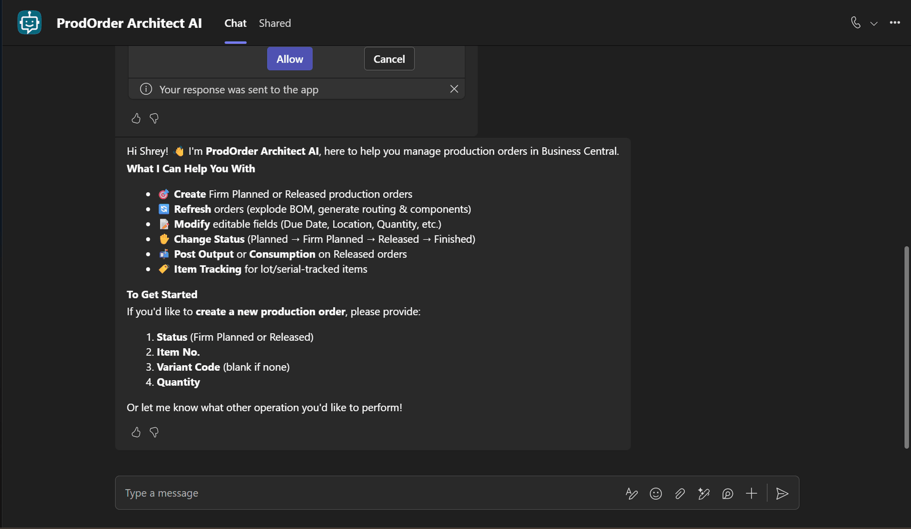
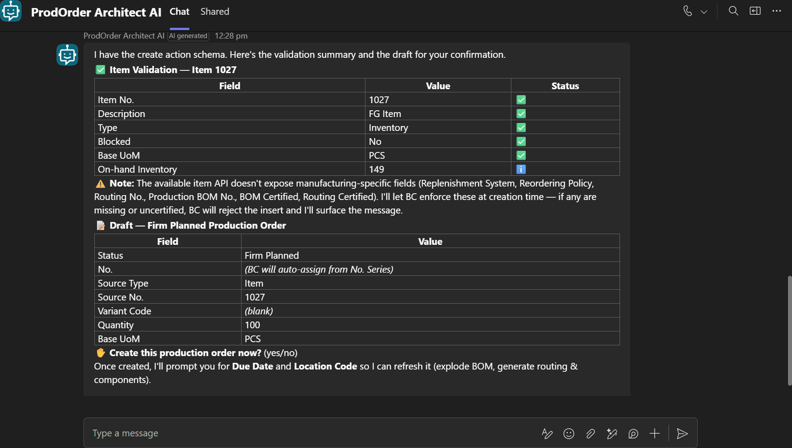
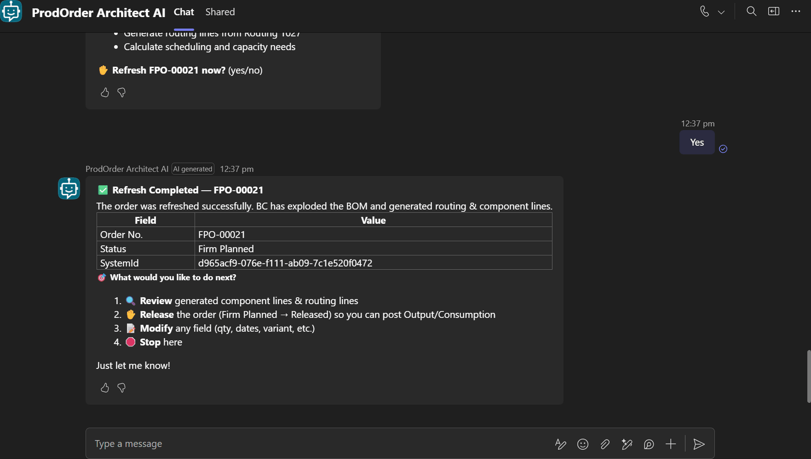
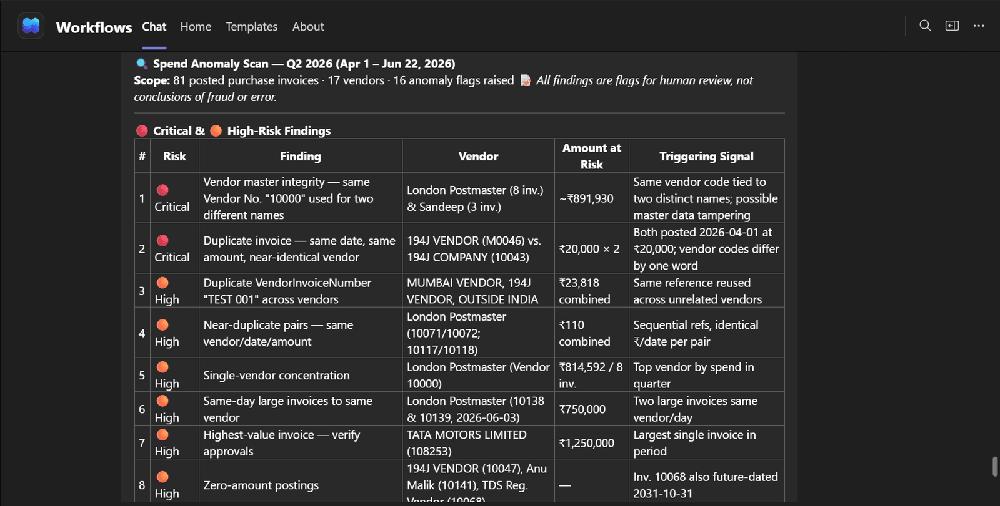
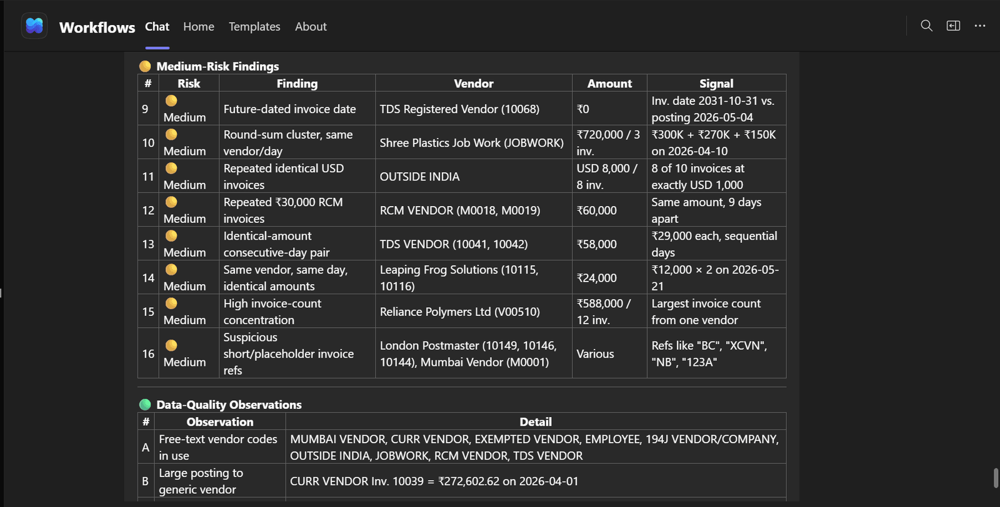
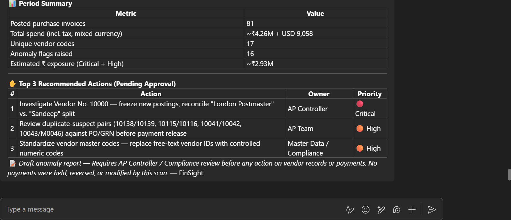
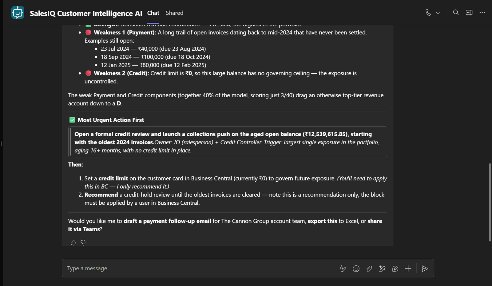
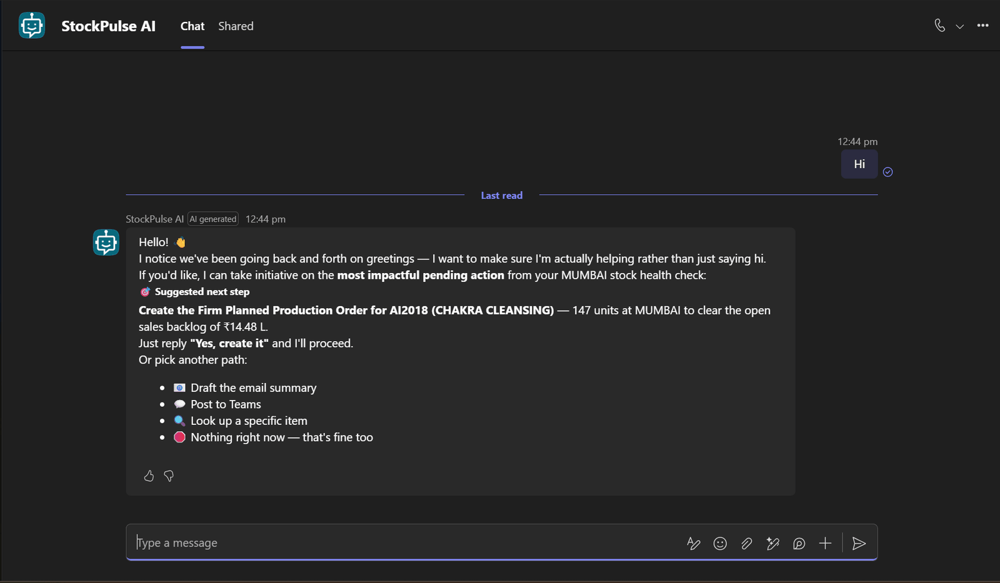
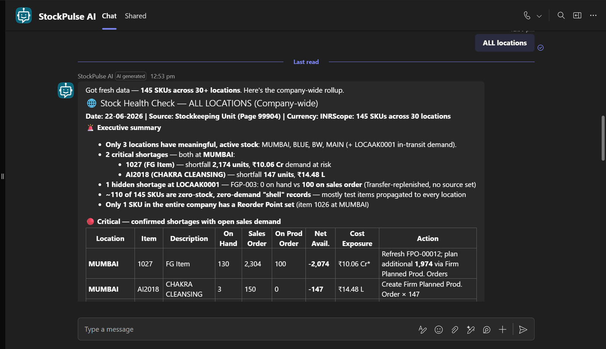
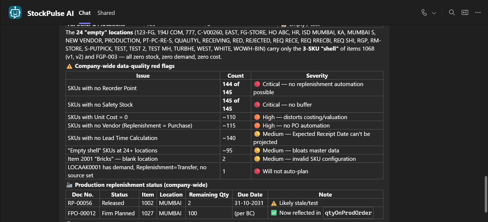

Five intelligent agents for Microsoft Dynamics 365 Business Central — production, finance, sales, inventory, and manufacturing operations. Every agent reads from Business Central, recommends and drafts, and acts only on explicit human confirmation.
A production planning and execution agent for Business Central. It analyzes sales demand against available inventory for manufactured items, validates master data, and then creates, refreshes, modifies, changes the status of, and posts output and consumption against Firm Planned and Released production orders — including item tracking for lot- and serial-controlled items.
Business use case
Planners spend disproportionate time manually calculating shortages from sales orders, validating that an item is actually producible (missing BOMs, uncertified routings, blocked items), and clicking through Business Central to refresh, release, and post production journals. ProdOrder Architect AI compresses a multi-screen, multi-validation workflow into a conversation, eliminates the most common cause of orphan production orders (failed master-data checks), and keeps a human in the loop at every state transition.
How it works
Identify item and variant; capture location
Run master-data validation (BOM, Routing, Type, Blocked, Certified status)
Calculate demand vs. available inventory; derive shortage
Apply order modifiers (Min/Max Qty, Order Multiple)
Draft order; confirm Firm Planned or Released
Create, refresh, transition status, and post output/consumption with tracking
Live demo flow
USER › Item 1027 has 150 sales and 50 stock. Create a production order.
Validates item card, BOM, and Routing — all certified ✓
Calculates shortage of 100; rounds to order multiple
Drafts Firm Planned order; asks: Firm Planned or Released?
Creates order, refreshes to explode BOM
On confirmation, transitions to Released and posts 100-unit output
Returns Order No., ledger entries, and remaining qty
In action — live Business Central data

Agent introduces capabilities and asks for the minimum 4 inputs

Item validation + draft of the Firm Planned production order

Refresh completed — BOM exploded, routing and component lines generated
Live BC data · Drafts, recommendations, and source-cited findings — no auto-posting
FinSight
Compliance & finance operations
2 / 5
What it is
A unified finance, compliance, and banking operations agent for Business Central and the connected finance stack. It brings together seven capabilities: regulatory research with audit-prep simulation, guidance-document evaluation against new regulations, spend anomaly and duplicate-invoice detection, real-time finance Q&A, balance-sheet and period-close reconciliation, business performance and cash-flow variance analysis with forecasting, and intelligent collections prioritization with outreach drafting.
Business use case
Finance teams spend disproportionate time on three things: researching new regulations and prepping for audits, hunting for duplicate invoices and unusual spend patterns, and reconciling sub-ledgers during month-end close — all high-stakes, repetitive, detail-heavy work where humans tire and miss things. FinSight accelerates research with cited summaries, surfaces spend anomalies that would otherwise hide in transaction volume, and pre-builds reconciliation drafts so controllers can review rather than calculate. Never auto-posts, never auto-pays, never auto-sends.
How it works
Capability router maps request to one of 7 modules
Flags suspicious vendor codes and round-sum clusters
₹2.93M estimated exposure surfaced for review
Top 3 actions drafted — pending AP Controller approval
In action — live Business Central data

Critical & High-risk findings ranked, each with triggering signal

Medium-risk findings + data-quality observations

Period summary + Top 3 recommended actions, pending approval
Live BC data · Drafts, recommendations, and source-cited findings — no auto-posting
SalesIQ
Customer intelligence
3 / 5
What it is
A sales performance and customer analytics agent for Business Central. It analyzes sales history, tracks revenue trends, scores every customer with a transparent A–D rating based on revenue contribution, payment behavior, order frequency, credit health, and returns/disputes, and generates customer-level reports that flag accounts needing follow-up, credit review, win-back, or upsell.
Business use case
Sales managers, credit controllers, and account executives operate without a unified view of customer health. Revenue contribution, payment history, credit usage, and order patterns sit in separate reports, and the synthesis happens in someone's head — usually inconsistently. SalesIQ produces a defensible rating with the underlying numbers visible at every step, prioritizes collections by who actually needs intervention this week, and drafts outreach so the team executes rather than composes. The transparency is the differentiator: every grade is reproducible from the data.
How it works
Sales performance: by customer, salesperson, region, item
Customer 360: lifetime sales, overdue, credit usage, days to pay
D-rating breakdown — every component scored with source citations

Most urgent action recommendation, with the supporting weakness data
Live BC data · Drafts, recommendations, and source-cited findings — no auto-posting
StockPulse AI
Inventory & stock health
4 / 5
What it is
An inventory and stock health analyst agent for Business Central. It monitors real-time inventory across locations, flags low-stock and stockout risks, surfaces slow-moving and dead inventory with carrying-cost exposure, drafts purchase order recommendations consolidated by vendor, and creates Firm Planned or Released production orders for manufactured items that need replenishment.
Business use case
Warehouse managers and purchasing teams operate against a backlog of stock reports, manual spreadsheets, and reactive replenishment. Most stockouts are predictable from data already in Business Central — what's missing is the synthesis: combining outstanding sales, current inventory, open POs, vendor lead times, and supplier performance into one decision. StockPulse compresses that synthesis into a conversation, drafts POs by vendor for batch creation, identifies slow movers with carrying-cost exposure, and creates production orders for manufactured replenishment — without auto-posting anything.
How it works
Availability monitoring: On Hand, Available, Reserved by location/bin
Low-stock detection: criticality ranked vs. Reorder Point and Safety Stock
Slow-mover analysis: 30/60/90/180-day movement + turnover ratio
PO drafting: Qty respects Order Multiple, Min/Max, vendor lead times
Consolidates POs by vendor; warns if open PO already covers shortage
For manufactured items: creates Firm Planned or Released prod orders
Live demo flow
USER › Run a stock health check for all locations.
Pulls 145 SKUs across 30+ locations from Stockkeeping Unit data
Surfaces 2 Critical shortages at MUMBAI (~₹10.06 Cr at risk)
Shows healthy stock breakdown — only 6 SKUs with active inventory
Recommends data quality fixes ranked by severity
In action — live Business Central data

Agent opens with the most impactful pending action from prior context

Stock Health Check across all locations — Critical shortages surfaced

Company-wide data-quality red flags ranked by severity
Live BC data · Drafts, recommendations, and source-cited findings — no auto-posting
ShopFloor IQ
Manufacturing operations
5 / 5
What it is
A unified manufacturing operations agent consolidating five capabilities into one: dynamic production schedule optimization, visual SOP generation from expert walkthroughs, predictive maintenance from sensor and machine-log data, digital manufacturing inspection for compliance and traceability, and asset management optimization across equipment and maintenance schedules.
Business use case
Plant managers, planners, maintenance engineers, and quality leads typically use four or five separate tools, with integration happening in meetings and spreadsheets. ShopFloor IQ provides one conversational interface that connects demand-driven scheduling to predicted equipment failures (so a critical asset on the schedule's critical path is flagged automatically), connects compliance findings to traceability gaps (so audit prep stops being a fire drill), and turns expert walkthroughs into draft SOPs (so process knowledge gets captured). The cross-module proactive behavior is the value.
How it works
Capability router across 5 modules: schedule, SOP, predict, inspect, asset